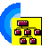
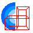

Control Cuentas Contables - Financial Markets Data
Control Cuentas Contables - Financial Markets Data
—
□
✕
Menu Principal
Saldos
Saldos
TiposMedios

Grupos
Cambios Divisas

Tipos de Interés
Importacion
Informes
Cartera
Operaciones
Transitorias y Tesorera
Mantenimiento Datos Fijos
Posiciones

Estructuras
3270-5250
Configuración y Utilidades
Alertas/Peticiones
Conciliaciones